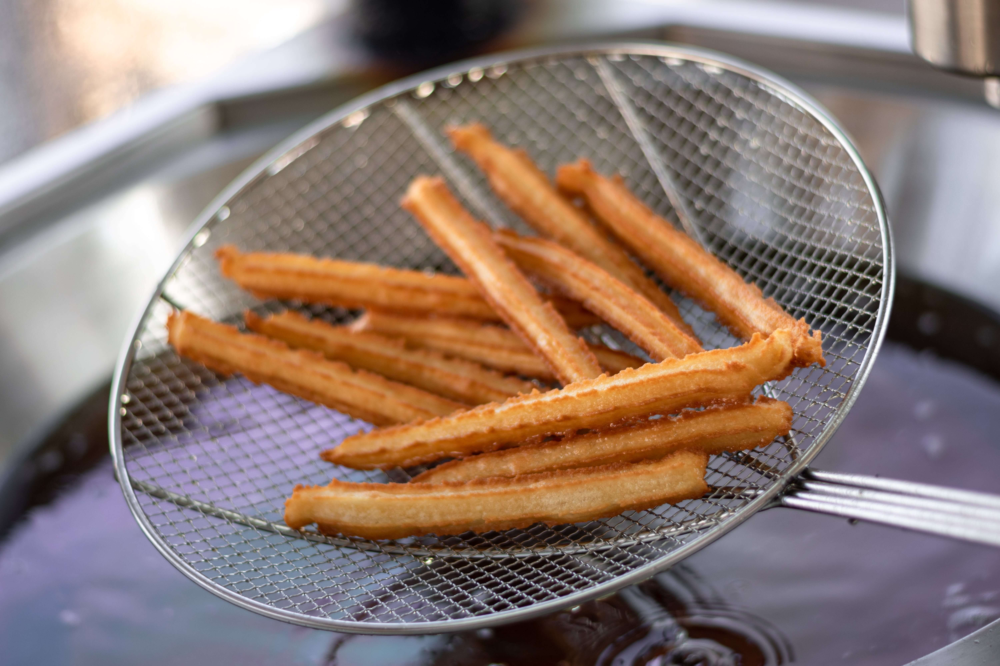

Bekende gerechten
Spanje staat bekend om meerdere gerechten
Tapas
Tapa (meervoud tapas) is een combinatie van meerdere kleine gerechtjes en drankjes.
Tapas wordt meestal door een grote groep mensen gegeten en al het eten deelt iedereen dan met elkaar.
Onder tapas vallen heel veel verschillende soorten gerechten van olijven tot chorizo en zelfs inktvis.
Paella

Paella is ook een typish Spaans gerecht.
Het gerecht bestaat uit een combinatie van rijst, zeevruchten en groente.
Dit gerecht wordt in een grote pan voorbereidt en woerdt meestal door een medewerken op je bord geschept.
Ook dit gerecht is bedoeld om in een groep te eten. Daarom staat er ook vaak op de kaart dast dit gerecht voor minimaal 2 personen is.
Churros
Churros zijn lange gefrituurde deeg stokjes die vaak bij het ontbijt gegeten worden.
Bij de churros zit vaak heel veel suiker en choclolade als je daar voor kiest.
Zelf vindt ik churros heel lekker en eet dit meestal wel tenmisnte een keer als ik in Spanje ben.
Gazpatcho
Gazpatcho is eigenlijk gewoon koude tomaten soep.
Het wordt in veel winkel verkocht en het zit meestal in een plastic bakje.
Mijn vader eet dit vaak, maar zelf lijkt het mij helemaal niet lekker.